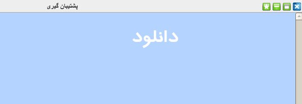

۱-پشتیبان گیری
پنل پشتیبان گیری یک پنل کارآمد برای ذخیره ی اطلاعات مجموعه هتلی می باشد. به این صورت که مدیریت می تواند در هر زمانی از کل اطلاعات وارد شده در نرم افزار یک فایل پشتیبان گرفته و در صورت نیاز از آن در نرم افزار استفاده کند.

برای انجام عملیات پشتیبان گیری لازم است بر روی کلمه دانلود کلیک کرده و مکان مناسبی برای ذخیره ی فایل پشتیبان انتخاب نمایید.